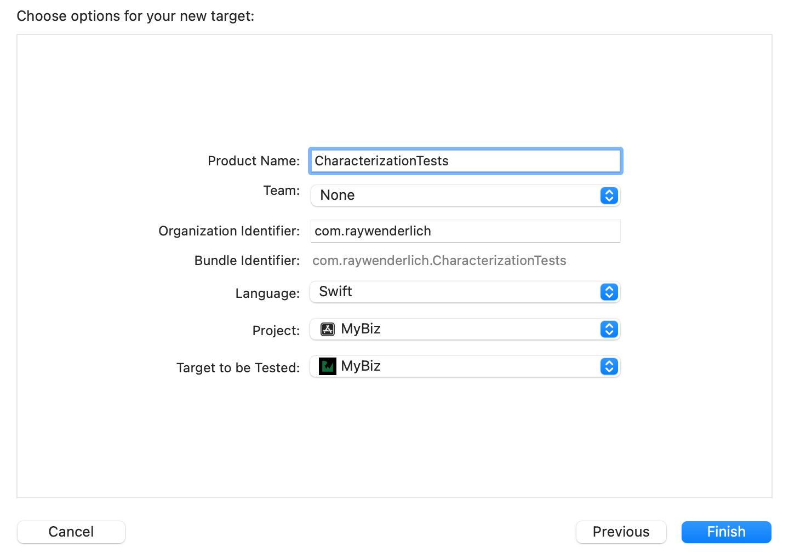
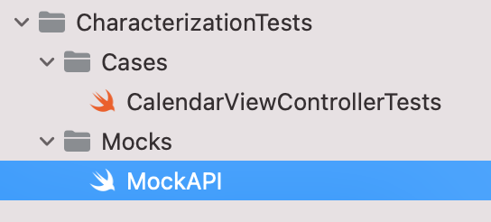
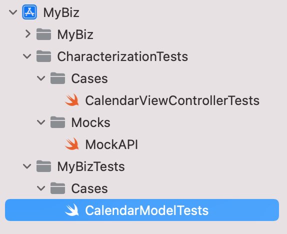
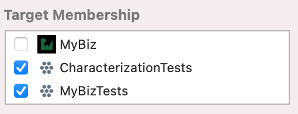

11: Legacy Problems¶
Beginning TDD on a “legacy” project is much different than starting TDD on a new project. For example, the project may have few (if any) unit tests, lack documentation and be slow to build. This chapter will introduce you to strategies for tackling these problems.
You may think, “If only this project were created using TDD, it wouldn’t be this bad.” Making the code more testable while adding unit tests is a great way to address these issues. Unfortunately, there isn’t a silver-bullet, sure-fire way to fix all of these issues overnight.
However, there are great strategies you can use to introduce TDD to legacy projects over time. In this chapter, you’ll be introduced to the Legacy Code Change Algorithm, which was originally introduced by Michael Feathers in his book Working Effectively with Legacy Code. Here are the high-level steps:
- Identify change points
- Find test points
- Break dependencies
- Write tests
- Make changes and refactor
Introducing MyBiz¶
MyBiz is the sample app for this section. It’s a very lightweight ERP app but will be illustrative of the kinds of issues you may encounter working with legacy apps. Don’t worry if ERP is a meaningless acronym to you. It stands for Enterprise Resource Planning, which is a four-dollar expression for “kitchen sink of business crap.”
In our TDD-world, “legacy app” most importantly means an app without adequate (or any) unit tests. And if “legacy” means code without any tests, then this app is capital-L Legacy.
Bloated, convoluted apps are common in large enterprises, such as where MyBiz would be used; however, these issues occur in all kinds of apps in organizations of different sizes and maturities. As soon as that first feature is added to an app that wasn’t architected to support it, these “legacy (anti-) patterns” start cropping up. Introducing TDD in your legacy app while adding features is a great way to avoid this.

One challenge working with MyBiz is that it does not use a modern architecture like MVVM or VIPER. Instead, a lot of the business logic exists in monolithic view controllers. It gets the job done, but, as you’ll see, it’s hard to add new things.
Setting up the app and backend¶
Before launching the starter app, you should fire up the backend. Like the Dogpatch app in Section 3, this is a Vapor-based backend. It’s very barebones for an ERP app, which would normally talk to a big multi-tiered services architecture made up of multiple servers and databases. However, the goal of this project is just to have a functional app for adding features, tests and refactoring, so the backend is high level and abstract.
Follow the installation instructions found in Chapter 8, “RESTful Networking,” to install Vapor.
Note
Note: To learn more about Vapor, you can read the documentation at https:// vapor.codes/ or check out our book Server-Side Swift With Vapor, which you can find at https://www.raywenderlich.com/books/server-side-swift-with-vapor.
Once Vapor is installed, fire up the backend by doing the following:
- Open a Terminal and navigate to the projects/backend folder.
- Run the following command to create your project file and open the Xcode project.
vapor xcode -y
- Set the scheme to Run if it is not selected already.
- Build and run.
You should see the terminal pop up at the bottom of the screen with the following text:
Server starting on http://localhost:8080
This means that the server is up and running. To check it out, open your web browser and visit localhost:8080/hello. You should see the following:
Welcome to MyBiz!
With the backend ready to go, open the starter project. Build and run. Click “Sign in” to use the hard coded credentials: username agent@shield.org and password "hailHydra". If the backend is set up properly, you’ll see a few tabs filled out with sample data.

Introducing the change task¶
To boost morale, the MyBiz HR Director has instituted a new policy of recognizing employee birthdays. As part of this process, you’ve been directed to add birthdays as events in the company calendar. For simplicity, assume that every user wants to see everyone else’s birthday.
Identifying a change point¶
To change an app, you must figure out where to put that change – that is, figure out which classes and files need to be modified. The first step is understanding the requirements so you know exactly what to implement.
You can distill the HR Director’s ask into the following statement:
Populate the user calendar with birthday events, one for each person in the organization’s contact book.
There are a lot of ways this can be done. For this tutorial, you’ll take the following approach:
• Add a birthday field for each employee. • For each employee, add a birthday event to the calendar. From the above, the change points are: • Employee.swift: You’ll add a birthdate field. • CalendarViewController.swift: You’ll need to add birthdays to the events list.
Finding a test point¶
Test points are the locations where you need to write tests to support your changes. Test points aren’t about fixing bugs, they are to preserve existing app behavior. Just as the TDD process isn’t about finding bugs, it instead prevents bugs later on as changes are introduced.
For legacy code, you’ll write characterization tests. These are tests that make explicit the current behavior of the code based on what the code does. With a big legacy app, especially in an enterprise, it’s important to understand and preserve the code’s behavior – ever hear the phrase, “That’s not a bug, that’s a feature”? The current users expect the app to behave a certain way, even if it isn’t what’s intended by the product manager, or what was written out in the spec.
Characterization tests are written for the code you plan to change and for that change’s broader context (such as its class or callers). If the change includes moving code or refactoring code, these tests should cover that code as well.
There’s a TDD-like formula for writing a characterization test. It’s a little like TDD except the code is already written:
- Use the code in a test function.
- Write an assertion that you expect to fail.
- Let the failure characterize the behavior.
- Change the test so that it passes based on the code’s behavior.
The main difference from TDD is in the last step above. You’ll change the test to match the code, rather than change the code to pass the test.
To better understand, you’ll apply this to a specific example.
Your test point will be in CalendarViewController, which is currently responsible for loading the list of events. You need to write characterization tests regarding the loading and displaying of events in the calendar so that adding birthdays does not break the app.
Using the code in a test¶
First, you’ll need a place to put those characterization tests. To do that, create a new test target:
- Add a new iOS Unit Testing Bundle target to the project. Name it CharacterizationTests.

A separate unit test target will be used for TDD-based unit tests as you add new code. It’s not necessary to separate characterization tests from other tests by a target, but, this way, you’ll have a clear idea of what the goals of these tests are.
- Delete the CharacterizationTests.swift stub file.
- Add a new group: Cases.
- In that group, add a new Unit Test Case Class, named CalendarViewControllerTests.
- Remove testExample and testPerformanceExample.
When it’s done, the CalendarViewControllerTests group should look like this:

Now, it’s time to set this class up for your tests.
First, add the app module import to the top of the file:
@testable import MyBiz
Next, add the following at the top of the class:
var sut: CalendarViewController!
Finally, replace setUpWithError() and tearDownWithError() with the following:
override func setUpWithError() throws {
try super.setUpWithError()
sut = UIStoryboard(name: "Main", bundle: nil)
.instantiateViewController(withIdentifier: "Calendar") as?
CalendarViewController
sut.loadViewIfNeeded()
}
override func tearDownWithError() throws {
sut = nil
try super.tearDownWithError()
}
You’ve set up CalendarViewController as your System Under Test (SUT) and you’ve loaded the view. Now you’re ready to write a test... but what will it be?
Breaking dependencies¶
A logical place to start is where events are loaded into the calendar. If you add birthdays to the list of events, you want to make sure not to break the existing event functionality.
Add the following test method at the end of the class:
func testLoadEvents_getsData() {
}
The next step is to have the view controller load events, but if you look in CalendarViewController, you’ll notice this is done by a call made in viewWillAppear(_:). This method is hard to test since that would mean performing view lifecycle events and dealing with unknown side effects.
To make testing easier, refactor the view controller so that loading events don’t require calling viewWillAppear(:). Select the last two lines of viewWillAppear(:) in CalendarViewController.swift. Then, select Editor ▸ Refactor ▸ Extract to Method. Name this new method loadEvents. Delete the fileprivate modifier so that your tests can access this method.
Now, events can be loaded in the test class. Open CalendarViewControllerTests.swift, add the following to testLoadEvents_getsData:
// when
sut.loadEvents()
This kicks off the events load, but you’re not yet ready to confirm if the data loaded.
Next, add the following to the end of the test:
let predicate = NSPredicate { _, _ -> Bool in
return !self.sut.events.isEmpty
}
let exp = expectation(
for: predicate,
evaluatedWith: sut,
handler: nil)
// then
wait(for: [exp], timeout: 2)
print(sut.events)
This waits for the events to load and then prints them out to the console.
Making the characterization into a test¶
This is not yet a true test since there is no assert, but this is a crucial step for characterizing the system as is.
Build and test testLoadEvents_getsData(), then take a look at the console. You should see something similar to the following:
[MyBiz.Event(name: "Alien invasion", date: 2021-11-05 12:00:00
+0000, type: MyBiz.EventType.appointment, duration: 3600.0),
MyBiz.Event(name: "Interview with Hydra", date: 2021-11-05
17:30:00 +0000, type: MyBiz.EventType.appointment, duration:
1800.0), MyBiz.Event(name: "Panic attack", date: 2021-11-12
15:00:00 +0000, type: MyBiz.EventType.meeting, duration:
3600.0)]
You can use these results to write the expectation.
Replace the print() in your test with the following. Update the dates to match the values you saw in the console — with some extra formatting. For each date copied from the console, replace the space between the date and time with a T, and remove the space between the time and timezone:
let eventJson = """
[{"name": "Alien invasion", "date":
"2021-11-05T12:00:00+0000",
"type": "Appointment", "duration": 3600.0},
{"name": "Interview with Hydra", "date":
"2021-11-05T17:30:00+0000",
"type": "Appointment", "duration": 1800.0},
{"name": "Panic attack", "date": "2021-11-12T15:00:00+0000",
"type": "Meeting", "duration": 3600.0}]
"""
let data = Data(eventJson.utf8)
let decoder = JSONDecoder()
decoder.dateDecodingStrategy = .iso8601
let expectedEvents = try? decoder.decode([Event].self, from:
data)
XCTAssertEqual(sut.events, expectedEvents)
Here, you’ve hard-coded an events JSON payload and decoded it. The assert validates that your payload matches the one in sut.events, which was loaded by loadEvents().
Note
The actual date will differ since the sample backend is coded to return events relative to your current date. This points out an actual problem you’ll experience connecting to a “live” backend — the data may change and make your tests unreliable. Fortunately, you won’t stay in this zone for long.
Now, run the test and it will still pass, but this time with an actual assert.
Adding a little stability¶
This is a good start but, as mentioned above, this test has a brittle dependency on the backend. Just wait a day and this test will no longer pass.
To work around this instability, you need to break dependencies until the test no longer depends on live API calls. “Restful Networking,” covers the theories and strategies for how to do this. In this next step, you’ll do a light version of that using a mock that overrides production code. This way you will to be able to proceed on the original goal: adding birthdays.
Get started by modifying CalendarViewController to support a Mock API class. In CalendarViewController.swift, replace the var api line with:
var api: API = UIApplication.appDelegate.api
This subtle change from a computed variable to a stored one will allow you to replace it in the test. You should re-run the test to verify that this change did not break any of the characterized behavior.
In the CharacterizationTests group, create a new group: Mocks. Inside, create a new Swift File, named MockAPI.swift.
When you’re done, the CharacterizationTests group will look like this:

Add the following code to the new file:
@testable import MyBiz
class MockAPI: API {
var mockEvents: [Event] = []
override func getEvents() {
DispatchQueue.main.async {
self.delegate?.eventsLoaded(events: self.mockEvents)
}
} }
MyBiz uses the API class to communicate with its backend. Here, you’ve created an API subclass that overrides getEvents(), calling eventsLoaded(events:) with mock data rather than making a service call. This is a baby step towards refactoring out the networking calls to make stable tests that can cover a range of cases.
Now, use it in CalendarViewControllerTests.swift. Add a var:
var mockAPI: MockAPI!
Create it by adding these just before the loadViewIfNeeded line in setUpWithError:
mockAPI = MockAPI()
sut.api = mockAPI
And to tearDownWithError, above the call to super:
Finally, rewrite testLoadEvents_getsData as follows:
func testLoadEvents_getsData() {
// given
let eventJson = """
[{"name": "Alien invasion", "date":
"2019-04-10T12:00:00+0000",
"type": "Appointment", "duration": 3600.0},
{"name": "Interview with Hydra", "date":
"2019-04-10T17:30:00+0000",
"type": "Appointment", "duration": 1800.0},
{"name": "Panic attack", "date":
"2019-04-17T14:00:00+0000",
"type": "Meeting", "duration": 3600.0}]
"""
let data = Data(eventJson.utf8)
let decoder = JSONDecoder()
decoder.dateDecodingStrategy = .iso8601
let expectedEvents = try! decoder.decode([Event].self, from:
data)
mockAPI.mockEvents = expectedEvents
// when
let predicate = NSPredicate { _, _ -> Bool in
!self.sut.events.isEmpty
}
let exp = expectation(for: predicate, evaluatedWith: sut,
handler: nil)
sut.loadEvents()
// then
wait(for: [exp], timeout: 1)
XCTAssertEqual(sut.events, expectedEvents)
}
This uses expectedEvents, loaded from hard coded data, to seed the mockAPI. It then tests that those values come back out when the events are loaded. Now, there is no more worry about the date of running the test. Run the test, and you should see it pass, regardless of what day you run it. That’s because the data is frozen forever in the test JSON.
Over the next few chapters, you’ll further refactor the API class so that the Mock can implement a protocol rather than override the production code. And then the final step would be to break up the API protocol into smaller, functional protocols so each screen only needs to be concerned with its piece.
It’s important to remember that the goal with this characterization test is not to ensure correctness, but rather to document what the code actually does. This way, you’ll be able to identify when later changes modify behavior.
If something unexpected is discovered, it doesn’t necessarily indicate a bug. Instead, this is an opportunity to get clarification on the intended behavior. If a fix is required, it can now be done with a test already in place to guide the way.
Having tests like this one in place provides confidence that subsequent refactors will preserve the app’s behavior. Generally, you’ll want to characterize a little more behavior than this before making changes — for example, capturing error and boundary conditions.
Writing tests¶
Now, it’s time to add the birthday feature. Since this will be new code, you’ll use TDD to make sure there are tests in place and use those tests to guide your code.
Next, you’ll create a new test target.
- Add a new iOS Unit Testing Bundle target to the project. Name it MyBizTests. This target will be for TDD-style tests that cover the new code.
- Delete MyBizTests.swift.
- Add a new group: Cases.
- In that group, add a new Unit Test Case Class, named CalendarModelTests.

To improve the readability, stability and testability of the codebase while also adding new features, you’ll create a model class that extracts the data logic out of the view controller; this will be done with a new class, CalendarModel.
Replace the contents of CalendarModelTests.swift with:
import XCTest
@testable import MyBiz
class CalendarModelTests: XCTestCase {
var sut: CalendarModel!
override func setUpWithError() throws {
try super.setUpWithError()
sut = CalendarModel()
}
override func tearDownWithError() throws {
sut = nil
try super.tearDownWithError()
}
}
This uses CalendarModel as the SUT, and you’ll get compile errors since it doesn’t yet exist.
In the project navigator, select CalendarViewController.swift and CalendarCell.swift. Create a new group named Calendar by using File ▸ New ▸ Group From Selection.
Add a new swift file named CalendarModel.swift to this group and replace its contents with the following:
class CalendarModel {
init() {}
}
Now, CalendarModelTests will compile, even if it doesn’t do anything yet.
Start with a basic piece — calculating birthday events from the employee list.
Add the following code to CalendarModelTests:
func mockEmployees() -> [Employee] {
let employees = [
Employee(
id: "Cap",
givenName: "Steve",
familyName: "Rogers",
location: "Brooklyn",
manager: nil,
directReports: [],
birthday: "07-04-1920"),
Employee(
id: "Surfer",
givenName: "Norrin",
familyName: "Radd",
location: "Zenn-La",
manager: nil,
directReports: [],
birthday: "03-01-1966"),
Employee(
id: "Wasp",
givenName: "Hope",
familyName: "van Dyne",
location: "San Francisco",
manager: nil,
directReports: [],
birthday: "01-02-1979")
]
return employees
}
func mockBirthdayEvents() -> [Event] {
let dateFormatter = DateFormatter()
dateFormatter.dateFormat = Employee.birthdayFormat
return [
Event(
name: "Steve Rogers Birthday",
date: dateFormatter.date(from: "07-04-1920")!.next()!,
type: .birthday,
duration: 0),
Event(
name: "Norrin Radd Birthday",
date: dateFormatter.date(from: "03-01-1966")!.next()!,
type: .birthday,
duration: 0),
Event(
name: "Hope van Dyne Birthday",
date: dateFormatter.date(from: "01-02-1979")!.next()!,
type: .birthday,
duration: 0)
] }
func testModel_whenGivenEmployeeList_generatesBirthdayEvents() {
// given
let employees = mockEmployees()
// when
let events = sut.convertBirthdays(employees)
// then
let expectedEvents = mockBirthdayEvents()
XCTAssertEqual(events, expectedEvents)
}
mockEmployees() and mockBirthdayEvents() are helpers that create mock data objects with hardcoded data. These methods will be used in several tests. The new test confirms that given a list of employees, a correct set of birthday events is generated.
You’ll need to add code to get this to compile. In Employee.swift, add the following below let directReports: [String]:
let birthday: String?
static let birthdayFormat = "MM-dd-yyyy"
This adds birthday as a data field and a description of the expected date format. For this exercise, you can safely assume this format is an iron-clad contract.
Next, add birthday as an event in Event.swift.
- Add the following to the EventType case list:
case birthday = "Birthday"
This needs the specified raw value to bridge between the lower-case enum convention and the upper-case server convention.
- Add the following to the switch in var symbol:
case .birthday:
return "🎂"
This will be used in populating the title of the birthday event in the calendar detail view.
Finally in CalendarModel.swift add this method:
func convertBirthdays(_ employees: [Employee]) -> [Event] {
let dateFormatter = DateFormatter()
dateFormatter.dateFormat = Employee.birthdayFormat
return employees.compactMap {
if let dayString = $0.birthday,
let day = dateFormatter.date(from: dayString),
let nextBirthday = day.next() {
let title = $0.displayName + " Birthday"
return Event(
name: title,
date: nextBirthday,
type: .birthday,
duration: 0)
}
return nil
} }
This method takes an array of employees and returns corresponding events for their upcoming birthdays.
Now, run CalendarModelTests, and the test will pass. Phew...
Loading birthdays in production¶
You’re now able to create Events from employee birthdays, but you don’t yet have a way to load birthdays in production code. You’ll work on that next.
Still in CalendarModelTests.swift, add the following test to the end of the class:
func testModel_whenBirthdaysLoaded_getsBirthdayEvents() {
// given
let exp = expectation(description: "birthdays loaded")
// when
var loadedEvents: [Event]?
sut.getBirthdays { res in
loadedEvents = try? res.get()
exp.fulfill()
}
// then
wait(for: [exp], timeout: 1)
let expectedEvents = mockBirthdayEvents()
XCTAssertEqual(loadedEvents, expectedEvents)
}
You call a new method, getBirthdays(completion:) that accepts a completion closure that returns an array of Events.
To get the test to build, add the following to CalendarModel.swift:
func getBirthdays(
completion: @escaping (Result<[Event], Error>) -> Void) {
}
But to get it to pass, you’ll need to build out some API-based functionality.
Add the following to CalendarModel above convertBirthdays(_:):
let api: API
var birthdayCallback: ((Result<[Event], Error>) -> Void)?
init(api: API) {
self.api = api
}
Also, delete parameterless init() method, since there is no default value for API.
This makes it possible to inject an API object, which will be used to fetch data from the server. There is also a variable to store a callback that you’ll use next.
Add the following contents to getBirthdays(completion:):
birthdayCallback = completion
api.delegate = self
api.getOrgChart()
This stores that completion block and calls into the api to get the employee list.
Next, add the following delegate extension at the bottom of the file:
extension CalendarModel: APIDelegate {
func orgLoaded(org: [Employee]) {
let birthdays = convertBirthdays(org)
birthdayCallback?(.success(birthdays))
birthdayCallback = nil
}
func orgFailed(error: Error) {
// TBD - use the callback with an failure result
}
func eventsLoaded(events: [Event]) {}
func eventsFailed(error: Error) {}
func loginFailed(error: Error) {}
func loginSucceeded(userId: String) {}
func announcementsFailed(error: Error) {}
func announcementsLoaded(announcements: [Announcement]) {}
func productsLoaded(products: [Product]) {}
func productsFailed(error: Error) {}
func purchasesLoaded(purchases: [PurchaseOrder]) {}
func purchasesFailed(error: Error) {}
func userLoaded(user: UserInfo) {}
func userFailed(error: Error) {}
}
orgLoaded(org:) converts the employees to birthday events via convertBirthdays() and forwards them back to the completion block. It’s called by getOrgChart() in API on successful completion of the network request. The remaining stubbed out methods are required by APIDelegate, but won’t be used here.
You don’t want to rely on this network request for your test. Go back to the test and use a mock API.
Open CalendarModelTests.swift and add the following above var sut: CalendarModel!:
var mockAPI: MockAPI!
You’ll see the following compile error:
Use of undeclared type 'MockAPI'
To fix this, open MockAPI.swift, and add it to both test targets in the file inspector:

In setUpWithError() replace:
sut = CalendarModel()
With the following:
mockAPI = MockAPI()
sut = CalendarModel(api: mockAPI)
Next, add the following to tearDownWithError(), before the call to super:
mockAPI = nil
Next, in MockAPI.swift add the following to MockAPI:
// MARK: - Org
var mockEmployees: [Employee] = []
override func getOrgChart() {
DispatchQueue.main.async {
self.delegate?.orgLoaded(org: self.mockEmployees)
}
}
Now, your MockAPI will simply call orgLoaded(org:) returning mockEmployees when getOrgChart is called.
Finally, open CalendarModelTests.swift and add the following to the given section of testModel_whenBirthdaysLoaded_getsBirthdayEvents():
mockAPI.mockEmployees = mockEmployees()
This passes the mockEmployees you defined to the MockAPI, so they’ll be returned. Build and test, and now the test will pass!
Now, you’ve added new code using TDD. This also reuses some of the characterization test code, which was the mock that was used to break the API dependency for testing. This is the dual focus of working with legacy code: focus shifting between adding new code and characterizing and refactoring existing code.
Making a change and refactoring¶
The final piece in adding the birthday feature is to refactor the view controller to use the new model and put the birthdays into the calendar view.
To do that, you’ll need to pull the events functionality into the model class. Start with a test! Add to CalendarModelTests.swift:
func testModel_whenEventsLoaded_getsEvents() {
// given
let expectedEvents = mockEvents()
mockAPI.mockEvents = expectedEvents
let exp = expectation(description: "events loaded")
// when
var loadedEvents: [Event]?
sut.getEvents { res in
loadedEvents = try? res.get()
exp.fulfill()
}
// then
wait(for: [exp], timeout: 1)
XCTAssertEqual(loadedEvents, expectedEvents)
}
This tests that the main events are loaded into the model as well. There are a few steps to get this to work.
First, add this helper function to MockAPI.swift, outside of the class, so it can be easily reused later.
func mockEvents() -> [Event] {
let events = [
Event(
name: "Event 1",
date: Date(),
type: .appointment,
duration: .hours(1)),
Event(
name: "Event 2",
date: Date(timeIntervalSinceNow: .days(20)),
type: .meeting,
duration: .minutes(30)),
Event(
name: "Event 3",
date: Date(timeIntervalSinceNow: -.days(1)),
type: .domesticHoliday,
duration: .days(1))
]
return events
}
This is a static set of test events that can be used when events are needed.
Next, you need to parallel the work you did for getBirthdays(completion:) in CalendarModel for regular events.
Open CalendarModel.swift and add:
var eventsCallback: ((Result<[Event], Error>) -> Void)?
func getEvents(
completion: @escaping (Result<[Event], Error>) -> Void) {
eventsCallback = completion
api.delegate = self
api.getEvents()
}
This stores a callback block and uses the api class to get the events.
Next, still in CalendarModel.swift, update eventsLoaded(events:) in APIDelegate to the following:
func eventsLoaded(events: [Event]) {
eventsCallback?(.success(events))
eventsCallback = nil
}
This forwards the events from the API on to the eventsCallback.
Now, the model tests will pass, and you’re halfway there. The next step is to update the view controller with the new model methods.
Updating the view controller¶
To help with writing more tests, move mockBirthdayEvents and mockEmployees from CalendarModelTests.swift to MockAPI.swift (outside the class below mockEvents()) so they can be re-used in multiple files.
Next create a new Unit Test Case Class, named CalendarViewControllerTests in MyBizTests. This will be the home for unit tests for new functionality of the view controller.
Up top, add the following:
@testable import MyBiz
Next, replace the contents of CalendarViewControllerTests with:
var sut: CalendarViewController!
var mockAPI: MockAPI!
override func setUpWithError() throws {
super.setUp()
sut = UIStoryboard(name: "Main", bundle: nil)
.instantiateViewController(withIdentifier: "Calendar")
as? CalendarViewController
mockAPI = MockAPI()
sut.api = mockAPI
sut.loadViewIfNeeded()
}
override func tearDownWithError() throws {
mockAPI = nil
sut = nil
super.tearDown()
}
func testLoadEvents_getsBirthdays () {
// given
mockAPI.mockEmployees = mockEmployees()
let expectedEvents = mockBirthdayEvents()
// when
let predicate = NSPredicate { _, _ -> Bool in
!self.sut.events.isEmpty
}
let exp = expectation(
for: predicate,
evaluatedWith: sut,
handler: nil)
sut.loadEvents()
// then
wait(for: [exp], timeout: 1)
XCTAssertEqual(sut.events, expectedEvents)
}
This is very similar to the characterization test class for this controller, except that this has a test case for loading birthday events.
Finally, open CalendarViewController.swift, and adding the following var:
var model: CalendarModel!
Next, add the following at the end of viewDidLoad :
model = CalendarModel(api: api)
Finally, replace loadEvents with the following:
func loadEvents() {
events = []
model.getBirthdays { res in
if let newEvents = try? res.get() {
self.events.append(contentsOf: newEvents)
self.calendarView.reloadData()
}
}
model.getEvents { res in
if let newEvents = try? res.get() {
self.events.append(contentsOf: newEvents)
self.calendarView.reloadData()
}
} }
Here, you call getBirthdays(completion:) and getEvents(completion:) on the model and update the calendarView with the new data on completion.
Finally, you can delete the APIDelegate extension, as the view controller is no longer the API delegate.
Now, build and test again, and all should pass. Congratulations! You’ve added employee birthdays to the app’s calendar without breaking anything. The HR director will be so happy.
Challenges¶
The next few chapters will cover these types of changes in greater detail, so the challenge here is pretty light:
Challenge 1: Add error handling¶
Go back and add error handling for the CalendarViewController. As a hint, you’ll need a way to mock API errors and handle them in the CalendarModel as well as the view controller.
Challenge 2: Clean up the code¶
Clean up the code and make it a little more reliable if there was a single call to the model for loading the events, instead of two.
Key points¶
In this chapter, you added a “small” feature of placing calendar events for employee birthdays following the code change algorithm. Here are the key points:
• Characterization tests let you discover the existing behavior and ensure that the behavior doesn’t break without warning. • Test-driven development is then used to laser-focus on the code that needs to be added or changed to incorporate the new feature. • Don’t change any more code than you have to without writing tests first. • You can break dependencies for testing through code injection.
Where to go from here?¶
This chapter’s concepts are laid out in the Working Effectively with Legacy Code by Michael Feathers, which is a helpful read if you want to learn more of the motivating theory.
The rest of the chapters in this section expand upon these ideas, giving more specifics and details about the sticking points when applying the code change algorithm. Chapter 12, “Dependency Maps,” covers dependency mapping, Chapter 13, “Breaking Up Dependencies,” covers modularization and refactoring code architecture, Chapter 14, “Modularizing Dependencies”, and Chapter 15, “Adding Features to Existing Large Classes” are dedicated to making big changes.
It’s also helpful if you skipped the last section on networking to go back over and skim it. Refactoring a poorly architected, backend-heavy application like MyBiz will require testing and moving code that calls into the networking layer.